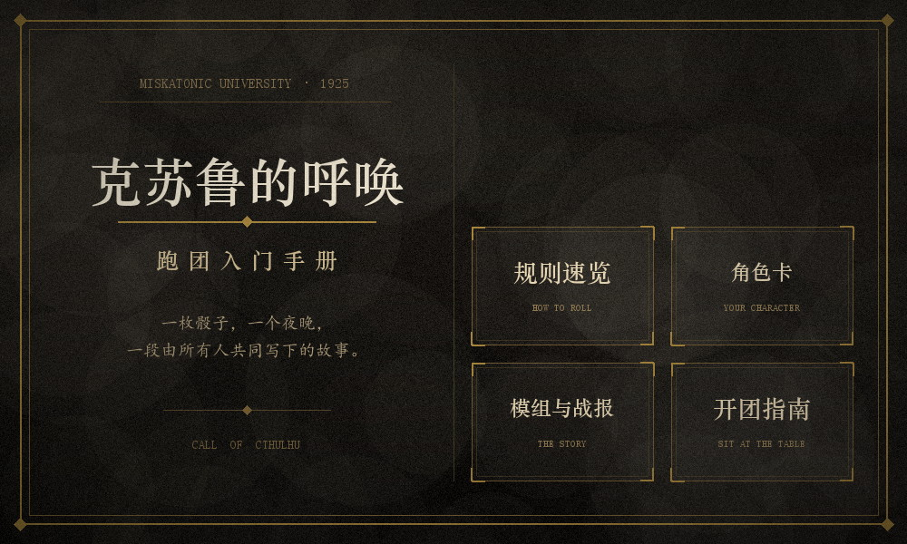

跑团，正式的名字叫桌面角色扮演游戏（Tabletop Role-Playing Game，简称 TRPG）。它不需要屏幕、不需要手柄，只需要一张桌子、几个人、几支笔，和一堆形状奇怪的骰子。一个人负责讲述世界——他叫 守秘人（Keeper，简称 KP）；其余的人各自扮演一个虚构的角色，叫 调查员（Player Character，简称 PL）。
《克苏鲁的呼唤》（Call of Cthulhu，简称 COC）是其中最有名的一支。它取材于作家洛夫克拉夫特笔下的「克苏鲁神话」，故事通常发生在 1920 年代的美国：也许是阿卡姆的一间旧图书馆，也许是马萨诸塞州某个起雾的港口小镇。调查员们追查一桩看似普通的失踪案，越查越发现，世界比他们以为的要大得多，也冷得多。
和多数游戏不同，COC 里没有「通关」这回事。你未必能赢，甚至未必能活着回来；但你一定会在某个夜晚，和几个人一起，把一件从没发生过的事讲得像是真的。
以下是快捷入口，请按顺序观看
只用一枚百面骰，就能判断任何一次行动成不成功。十分钟看懂 COC 的核心机制。简版介绍，真规则请看原书。
HOW TO ROLL你是谁、你会什么、你为什么来。一张填满的原创角色卡，逐项拆给你看。
YOUR CHARACTER一个原创短模组《雾港来信》的三幕结构，外加一段真实跑团记录。
THE STORY怎么凑人、用什么工具、新手该注意什么，以及最重要的：它其实是一场社交。
SIT AT THE TABLE「人类最古老而强烈的情绪是恐惧，而最古老最强烈的恐惧是对未知的恐惧」
————洛夫克拉夫特